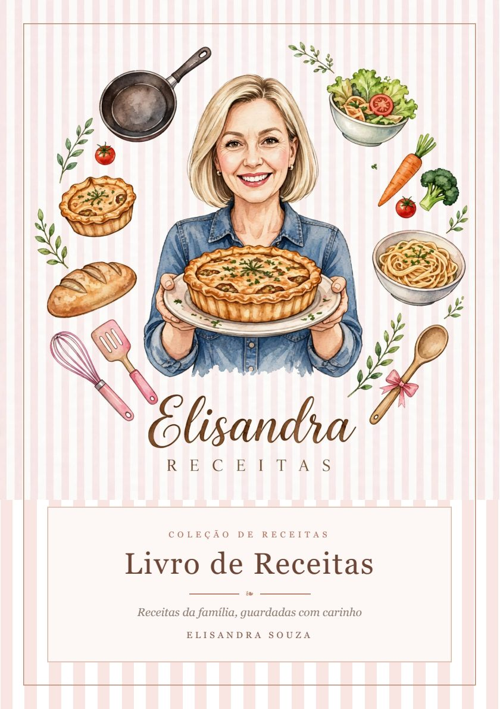
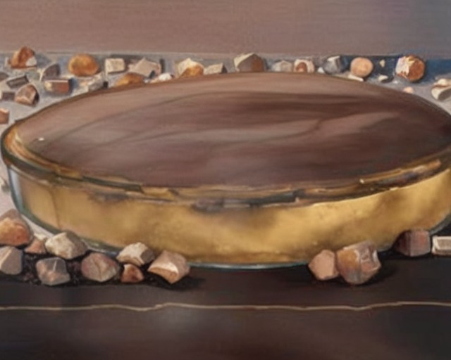

Lanches
Lanche de pão francês com carne moída
Para deixar pronto no freezer e fritar na hora da fome.
Livro digital · Elisandra Souza
Receitas práticas do dia a dia, com ingredientes simples e um passo a passo fácil de seguir.
Em PDF. Abre no celular, tablet e computador.

Por dentro
Cada receita tem ilustração, ingredientes ao lado do modo de preparo e dicas da cozinha de casa. Toque numa página para ampliar.
Ingredientes e modo de preparo lado a lado, com cada etapa numerada.
Cada receita abre com uma ilustração própria, no mesmo estilo da capa.
Sumário clicável e páginas numeradas, feitos para consultar no celular enquanto cozinha.
Do livro
Pratos da rotina da Elisandra, cada um com ilustração e passo a passo.
Lanches
Para deixar pronto no freezer e fritar na hora da fome.

Sobremesas
Chocotone, doce de leite e uma cobertura de ganache.
Pratos principais
Receita de Quaresma, feita na panela de pressão.
Experimente
Escolha quantos lanches vai fazer e marque os ingredientes e as etapas enquanto cozinha.
Prático para deixar pronto no freezer e fritar na hora da fome.
Ingredientes
Modo de preparo
0 de 5 etapas
Dúvidas
É um livro digital em PDF, com sumário clicável e páginas numeradas.
Sim. O PDF abre no celular, no tablet e no computador, e você pode imprimir as receitas se preferir.
A edição completa terá de 30 a 50 receitas, divididas em lanches, pratos principais e sobremesas.
Em breve. Chame a Elisandra no WhatsApp, (48) 99991-7010, ou acompanhe o Instagram @elisandra_ssouza para saber a data.
Lançamento
O livro de receitas da Elisandra está chegando. Chame no WhatsApp para garantir o seu ou acompanhe as novidades no Instagram.
WhatsApp: (48) 99991-7010 · Instagram: @elisandra_ssouza